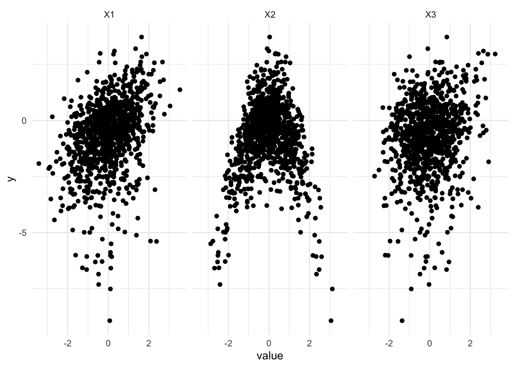
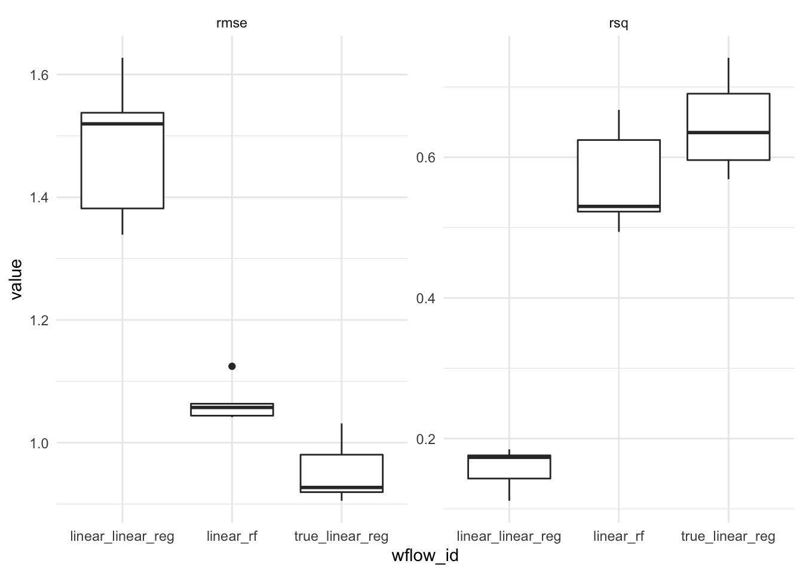
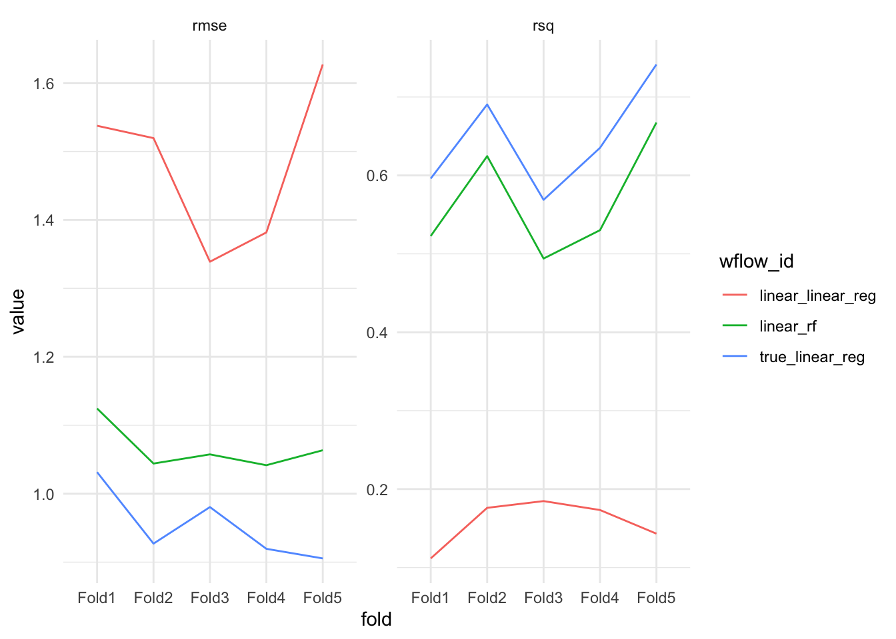
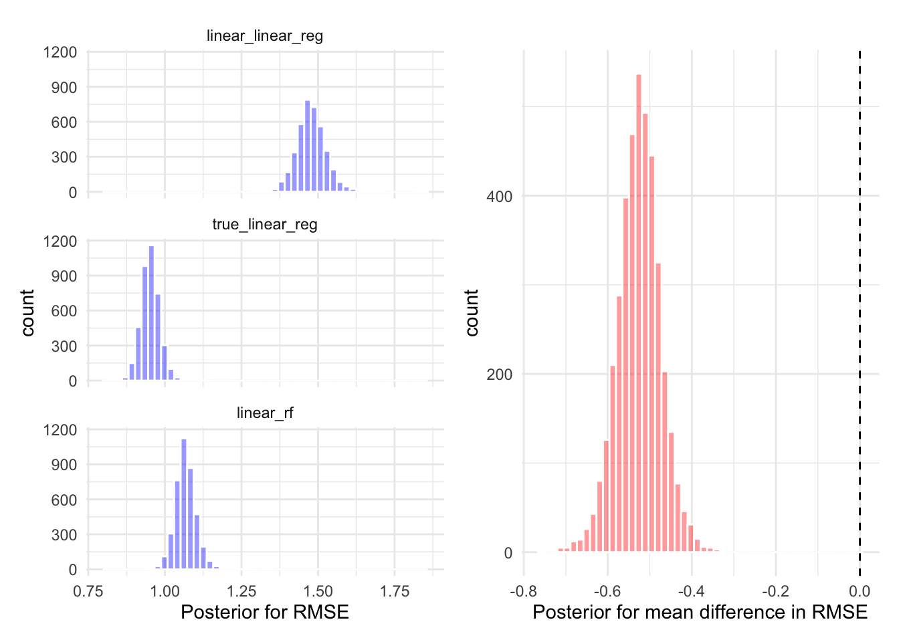

![]()
n <- 1000
# Sample coefficients from standard normal
beta <- rnorm(3)
# Sample variance from exponential
sigma <- rexp(1)
X <- matrix(rnorm(3 * n), nrow = n, byrow = TRUE)
y <- rnorm(n = n, mean = cbind(X[,1], X[,2]^2, X[,3]^3) %*% beta, sd = sigma)One common problem in machine learning is comparing models. Some choose to calculate a single metric (accuracy, ROC AUC etc.) and compare the value across several models, however fitting multiple models to the same train-test split can result in overfitting. To combat this, we can perform k-fold cross validation. Additionally, we can then use a statistical model to determine if the difference in performance between the models fit on the same k-folds is real or random variation in the sampled test sets. This post uses a method common to meta-analysis, when combining and understanding results from multiple related trials with possibly different datasets. This method has been used for comparing ML models and a detailed treatment for ML model comparison can be found in Benavoli et al. (2017).
To evaluate the methods, we will first simulate some data. Let’s consider a multiple linear regression with polynomial relationships.
\[ \begin{aligned} y_i \sim \mathcal{N}(x_1 \beta_1 + x_2^2\beta_2 + x_3^3\beta_3, \sigma^2) \end{aligned} \]
Warning: The `x` argument of `as_tibble.matrix()` must have unique column names if `.name_repair` is omitted as of tibble 2.0.0.
Using compatibility `.name_repair`.
This warning is displayed once every 8 hours.
Call `lifecycle::last_lifecycle_warnings()` to see where this warning was generated.
We have a dataset of size \(n = 1000\), we split the dataset into \(k = 5\) folds by sampling 5 non-overlapping test sets. We use the vfold_cv function from rsample.
splits <- vfold_cv(df, v = 5)Next, we propose a few candidate models. We can specify the model which is used to generate the data and a random forest which should do a good job to unpick the relationship.
model1 <- linear_reg() %>%
set_engine("lm")
rf <- rand_forest()We can now specify a workflow set, this includes a recipe for each model.
wfs <- workflowsets::workflow_set(
preproc = list(
"linear" = y ~ .,
"true" = y ~ X1 + poly(X2, 2) + poly(X3, 3),
"linear" = y ~ .
),
models = list(
linear_reg = linear_reg() %>% set_engine("lm"),
linear_reg = linear_reg() %>% set_engine("lm"),
rf = rand_forest(mode = "regression") %>% set_engine("ranger")
),
cross = FALSE
)wf_results <- workflow_map(wfs, resamples = splits, fn = "fit_resamples", verbose = TRUE)i 1 of 3 resampling: linear_linear_reg✔ 1 of 3 resampling: linear_linear_reg (766ms)i 2 of 3 resampling: true_linear_reg✔ 2 of 3 resampling: true_linear_reg (768ms)i 3 of 3 resampling: linear_rf✔ 3 of 3 resampling: linear_rf (2.2s)Figure @ref(fig:plot-results) (left) shows the root mean squared error (RMSE) between each models prediction and the corresponding actual value in the test set. The results appear as a box-plot since the
\[\text{RMSE} = \sqrt{\sum_{i=1}^N (y_i - f(x_i))^2}\]
Where \(N\) is the number of data points in the test dataset (it’s \(N = 200\) in our example), \(y_i\) is value of the \(i^{th}\) test example and \(f(x_i)\) is the prediction for the \(i^{th}\) datapoint.
Figure @ref(fig:plot-results) (right) shows the R-squared value, the proportion of explained variance. The R squared value is calculated by
\[R^2 = 1 - \frac{SS_\text{res}}{SS_{\text{tot}}}\]
Where,
\[SS_{\text{res}}=\sum_{i=1}^N (y_i - f(x_i))^2,\\ SS_\text{tot} = \sum_{i=1}^N(y_i - \bar{y})^2.\]
Warning: `cols` is now required when using unnest().
Please use `cols = c(info, option, result)`
Hierarchical Model
We must ensure the \(k\)-folds we sample are identical across models. We can then use a statistical model to determine if the differences between models are real or simply random variation in the sampled test sets. To perform the comparison we consider the RMSE for each of the \(k=5\) folds. \(y_{ij}\), \(i = 1, \dots, k\), \(j = 1, \dots N_\text{models}\) is the calculated root mean squared error for the \(i^{th}\) fold, with the \(j^{th}\) model. We use a log transformation on the RMSE, which is a positive real number, \(\mathbb{R}_{\geq 0}\), which transforms the metric to be unconstrained on the real line \(\operatorname{log}: \mathbb{R}_{\geq 0} \rightarrow \mathbb{R}\). The outcome is then suitable to model using a Normal distribution.
$$
\[\begin{aligned} y_{ij} &= \mathcal{N}(\mu_{ij}, \sigma^2), \\ \mu_{ij} &= (\beta_0 + b_i) + \beta_1 x_{i1} + \beta_2 x_{i2}, \\ b_i &\sim t(1), \\ \beta_j &\sim \mathcal{N}(0, 10), \\ \sigma &\sim \operatorname{Exponential}(1). \end{aligned}\]$$
This is a random intercept model, where \(b_i\) is drawn from a t-distribution with 1 degree of freedom. This means the coefficients, \(\beta_j\) will be the same across folds in each model and the difference between folds is modeled by the random intercept. For our purposes, we are not interested in the difference between folds, just the difference between the models represented by the \(\beta_j\) coefficients. The variation between the metrics for each fold will inform us how certain our posterior predictions are. Figure @ref(fig:performance-folds) shows the RMSE and R-squared for each of the five folds.

# To compare between models, we have as the id column the fold under consideration.
# each column then corresponds to a model with the same metric.
fit <- results_df %>%
select(id = fold, model = wflow_id, rmse) %>%
pivot_wider(names_from = model, values_from = rmse) %>%
tidyposterior::perf_mod(
formula = statistic ~ model + (1 | id),
transform=tidyposterior::ln_trans,
prior_intercept = rstanarm::student_t(df = 1)
)Figure @ref(fig:posterior-performance) (left) shows the posterior distribution of the RMSE for the two linear regression models applied to the simulated dataset. Figure @ref(fig:posterior-performance) (right) shows the posterior difference between the estimated RMSE for the linear regression model specified with the known data generating process, compared to the linear regression model without polynomial terms. There is 95% probability that the RMSE of the model which uses the known data generating process is 0.61 smaller than linear regression model specified without polynomial terms.

References
Citation
BibTeX citation:
@online{law2021,
author = {Jonny Law},
title = {Model {Comparison} with {Hierarchical} {Models}},
date = {2021-09-27},
langid = {en}
}
For attribution, please cite this work as:
Jonny Law. 2021. “Model Comparison with Hierarchical
Models.” September 27, 2021.